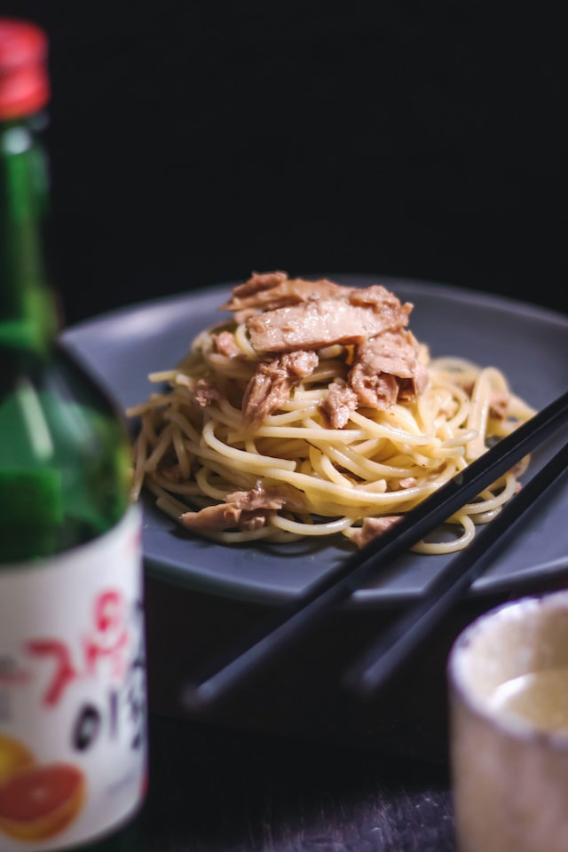

Pasta with tuna and sauce

Pasta with tuna and sauce is a very simple recipe but it's very good!
Canned tuna is used to make this yummy tomato sauce. Use pasta of your choice.
Ingredients
- 1 tablespoon olive oil
- 1 onion, chopped
- 2 cloves crushed garlic
- 1 tablespoon capers
- 1 (14.5 ounce) can crushed tomatoes
- 1 tablespoon lemon juice
- 1 tablespoon chopped fresh parsley
- ¼ teaspoon red pepper flakes
- 2 (5 ounce) cans tuna, drained
- 1 (16 ounce) package dry pasta
Steps
- In a large saute pan, heat oil over low heat. Add onion and garlic; cook and stir until onion is tender. Stir in capers, tomatoes, lemon juice, and parsley. Season with red pepper flakes to taste. Simmer gently for 3 minutes to thicken sauce. Fold in tuna, and heat through
- While sauce is cooking, add pasta to a large pot of rapidly boiling water; cook till just tender. Drain well
- Toss pasta with sauce, and serve.
Return to main page